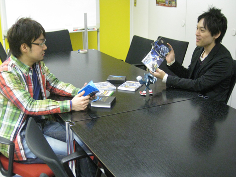
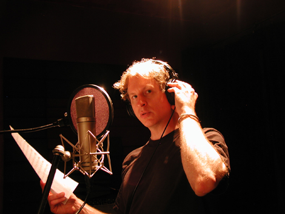
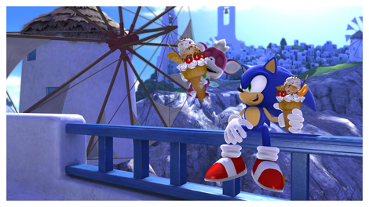
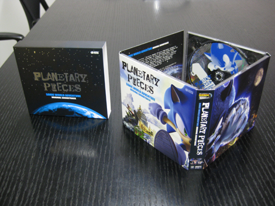
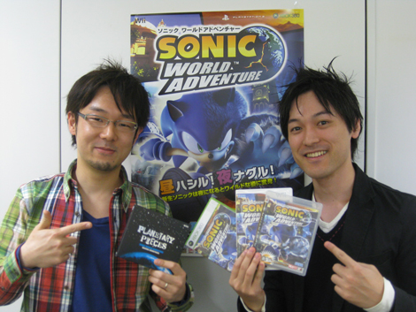

第１２回 橋本×大谷 サウンド対談 その５「エンディングテーマ」
2009年03月31日
大谷 ： では、今回はエンディングテーマについての話をしたいと思います！
橋本 ： エンディングテーマも語りがいがありますねー。

大谷 ： そうですね！
主題歌ともう１曲、物語を締めくるエンディングテーマを作ろうということに決めたんですよね。
橋本 ： はい、当時はまだ漠然としてましたが、バラードっぽいので行きましょう的な話でしたね。
大谷 ： そんな感じでしたね。今回の物語がソニックとチップの冒険のお話なので、「友情」をテーマにした歌がいいんじゃなかとか、アイデアを出していきましたね。
橋本 ： ええ、ええ、「友情」が今回はずせないキーワードでしたね。
大谷 ： 大切な友達との「友情」をキーワードにしたバラードということですね。
橋本 ： 川村アートディレクターとは「エンディングではホロリとさせたい」という目標を立てていたので、バラードは欠かせない感じでした。
大谷 ： そんなこと目論んでましたか。
「ホロリ」というキーワードは聞きませんでしたね。
橋本 ： 特にそれはサウンドの打ち合わせでは語ってません。
あんまり制約を入れたくなかったので。
あと、「ホロリを狙った曲」になってほしくもなかったですしね。
大谷 ： なるほど、あざとい感じにはしたくなかったということですね。
橋本 ： そうそう。あくまでナチュラルに。
大谷 ： それ以上は、特に細かい打ち合わせはしませんでしたが、こちらもそのようなつもりで進めていましたよ。
早速デモの制作に入るのですが、このエンディングテーマは、この１曲のためだけに参加してる南波（注１）に作曲をお願いしました。
橋本 ： デモの制作は順調でしたか？
大谷 ： 順調でしたね。南波が作ったデモに、歌詞のない仮の歌をのせて聴いてもらったのが最初だと思いますね。
橋本 ： たしか仮のハミング入りバージョンでしたよね。
大谷 ： 繊細なバラードなので、意図している歌声のニュアンスひっくるめて、曲のイメージが伝わりやすいよう仮の歌、俗に言う「仮歌」入れることもあるんです。
その方が伝わりやすいですか？
橋本 ： とってもイメージしやすかったですよ。
「お、これは、すてきな”ホロリ”になりそうだ。よしよし。」って思いました。
一発OKでしたよね。
大谷 ： そうでしたね。
早速、本番で歌ってもらうシンガーを探すため動き始めたんですが、すぐに決まった『Endless Possibility』とは逆に、こちらは超難航したんです。
「求めている声質や歌い方のニュアンスで選ぶ」という基本のプランと、もう１つは、友情の歌なので、例えば「２人組のデュオのシンガーに歌ってもらう」というコンセプトよりのアイデアもあって、いくつかの線で探していきました。
橋本 ： いろいろ当たってましたよね～。
大谷 ： たくさんのアーティストの音源資料を聴いたんですが、なかなかしっくりくる方に出会えず、かなり焦り始めていました。
瀬上とも、どうしたものかと話していた頃、南波がMySpace（注２）というアーティストのためのSNSで「ブレント・キャッシュ」というシンガーを見つけたんです。
彼の声は曲のイメージにぴったりはまりそうだということで、すぐにコンタクトをとってもらいました。
橋本 ： へえええ、MySpaceから見つけたんですか。
それで仕事の依頼に繋がるなんて、MySpaceも侮れませんねえ。
大谷 ： そうですね。
日本でもリリースしている彼のアルバムもチェックしつつ、返事を待ちつつ、なんとしても上手くまとまって欲しい！と願い続けていました。
橋本 ： なかなかオシャレ系の歌を歌っているやさしい声のアーティストさんですよね、返事はどんな感じでしたか？
大谷 ： はい、その時の僕らは相当焦っているので、なかなか返事が来ない状況に耐えきれず、彼がアルバムをリリースしているレーベルにも、同時に問い合わせてもらいました。
すぐに返事が来て、そこから先はトントン拍子に話が進み、レコーディングの日程まで決まりました。ほんとに安心した瞬間ですね。
橋本 ： 結構日程が厳しかったですものね。決まってよかったですね。
大谷 ： 「ブレント・キャッシュ」自身の活動は、作詞作曲をして楽器も弾いて歌も歌うシンガーソングライターなんですが、「バート・バカラック」などをルーツにした、60年代のポップスのフィーリングを今も大切に活動している方なんです。
今回の『Dear My Friend』という曲をすごく気に入ってくれました。

橋本 ： おぉ、すごい気に入ってくれましたか。
大谷 ： ロサンゼルスでの歌の収録には南波が立ち会ったんですが、このイントロのピアノはどう弾いているんだとか、曲のことを細かく質問されたと言っていました。
仕事とは言え、楽曲そのものを気に入ってもらえないと良い結果には結びつかないですし、音楽のコラボレーションというのはそうありたいですよね。
橋本 ： おお、仕事とは言え、それはとってもやる気を感じますね！
大谷 ： インターネットで出会った、地球上の離れたところに住んでいるアーティストと、１つの曲を完成させてしまうという行為がすごいなと思いましたね。
橋本 ： なんだか、そういうのも今回の「ワールドアドベンチャー」というテーマにピッタリですね！
サウンドチームもワールドアドベンチャー（笑）
大谷 ： ワールドアドベンチャーでしたね。
そうこうするうちに曲が完成しましたが、 完成版は聴いてどうでした？
橋本 ： すっごく良かったです！！！
僕ね、この曲大好きなんですよ。・・・ってそればっかり言ってる気がしますが（笑）
なんかね、何度聞いても「キュン」となる曲ですね。
大谷 ： 「キュン」は初耳ですね～（笑）
橋本 ： 物語の内容にも関係するので歌詞内容には触れられないですけど、「キュン」ときます。良いです。
ゲームをプレイして、クリアして、この曲。すばらしいです。流れにあってます。
メロディも演奏も歌声も歌詞もはまってます。
大谷 ： SWAにはたくさんの曲がありますが、これも欠かせない大切な１曲となりましたね。
橋本 ： はい、とっても重要な曲になってくれました。グッジョブです。
大谷 ： ありがとうございます。
この曲に関わった全てのスタッフががんばったおかげですね。
橋本 ： そうですね、サウンドスタッフのみなさんはいろいろ苦労されたと思いますが、すばらしい名曲になったと思います。
大谷 ： エンドロールでは挿絵が効いてますよね。
SWAのエンドロールはかなり長いと思うのですが調整には苦労しましたか？
橋本 ： ええ、あのエンドロールは川村アートディレクターとアーティストチームがかなり力を入れて、エンドロール専用に挿絵をいっぱい作ってくれました。
全部実機映像なのですが、CGレンダリングのようにきれいなしあがりです。
スタッフの人数が膨大でエンドロールもかなり長いので、総尺と曲の編成の関係などもどうしようこうしようと打ち合わせましたね。
大谷 ： 何度か打ち合わをして、総尺１３分程度に落ち着きましたよね。
挿絵にはそこでしか見れないショットがあって、とてもジ～ンときましたよ。
なんというか、スタッフの愛を感じましたね。

橋本 ： エンドロールは川村さんに挿絵の挿入のタイミングなどを調整してもらってたんですが、自分で見ているうちに「ホロリ」と来たらしいですよ（笑）
大谷 ： ははは、それはいいエピソードですね（笑）
橋本 ： ほんと、「ソニック ワールドアドベンチャー」のスタッフの作品に対する情熱はものすごいものがあったので、そういう想いがエンドロールにも良く現れてます。
ぜひ最後までみなさんプレイしてほしいですね。
さて、このようにすばらしい楽曲満載の「ソニック ワールドアドベンチャー」ですが、それらの楽曲がすべて詰まったサウンドトラックが好評発売中ですね。
大谷 ： そうですね。早いもので発売から２ヶ月経ちましたが、ありがたいことに各方面からCDの感想など頂いています。
橋本 ： このサントラもかなり気合いが入ってますよね。
大谷 ： はい、トータルの曲数も多く、様々なジャンルのバラエティーに富んだリッチなサウンドなので、サウンドトラックも、それに見合った形でまとめたいと思ったんです。
橋本 ： なるほど。
このサウンドトラックアルバムのタイトル名である「プラネタリー・ピーシーズ」はどういう風につけたのですか？
大谷 ： 今回の物語は、割れてしまった惑星を元通りにするお話なので、SWAの楽曲、１曲１曲も惑星の断片と捉えました。
その惑星の断片でもある、楽曲をまとめたCDということで、「惑星の断片集」＝「プラネタリー・ピーシーズ」というタイトルに決めたんです。
橋本 ： そっか、曲が全部集まってひとつの惑星になりますよというニュアンスなんですね。
大谷 ： そうです。その集大成ですね。
ご覧の通り、かなりの豪華仕様なんです。
が、ちょっと真面目な話、音楽のダンロード販売とか音楽そのものの所有の仕方や、所有に対する考え方そのものが変わってきていると思うんですが、自分はアナログレコードの大きな絵のジャケットが好きだったりするんです。
やはり、パッケージ商品を作るなら手にとって嬉しくなってしまうような、物として魅力のあるものをきちんと作りたかったんですね。
橋本 ： うんうん、今回のパッケージは豪華ですね。
箱から出すと、綺麗に印刷された観音開きの紙パッケージになってますね。
大谷 ： このマットなさわり心地もいいんですよ。
でも、ただ豪華なだけじゃつまらないんです。どこかに遊び心がないと。
ハミだしブログの方でも紹介してもらいましたが、このCDのケースは輪にして端と端をつなげると、絵がぐるっと一周するようになるんです。
橋本 ： これは凝ってますねえ。世界を一周してるわけですね。
大谷 ： そこらへんは、世界を巡る物語に忠実な仕様になっています。
あとは、銀箔が散りばめられている外箱の☆の中に、あるものが紛れ込んでいたりしますね。

橋本 ： あはは！へんなのがひとつ紛れてますね（笑）。
これは買って確認してみて欲しいですね～。
大谷 ： ちょっと小さいサイズのブックレットもとても気に入ってるんです。
曲ごとにどんな楽器の演奏家が参加しているのかなど全て掲載してあります。
橋本 ： あと、ブックレットには『Endless Possibility』や『Dear My Friend』の英語の歌詞と日本語の対訳が両方載っているのもいいですね。
歌の内容を味わって欲しいですよね。
大谷 ： 歌詞の日本語対訳をサントラのために起こしましたので、是非チェックしてみて欲しいです。
音楽を聴きながら色々な部分を楽しんでもらいたいですね。
さて、 全５回にわたり『SWA』のサウンド振り返って来ましたが、勢いのある主題歌もあれば、壮大なオーケストラもあり、優しく繊細なバラードもある。
ジャンルで音楽を選ばない方にもオススメ出来るポップなサウンドで、このバラエティー感こそがSWAの音楽の最大の魅力だと思うんですが、どうでしょう？
橋本 ： ええ、それぞれ単品として聴いても魅力的な曲がさまざまなジャンル、雰囲気で構成されていて、SWAというゲームの魅力を大きく引き上げていると思いますね。
大谷 ： 最初の打ち合わせの時、橋本さんが「メインテーマ曲は古き良きハリウッド映画のようなオーケストラにしたい」と言ったのはつまり、より多くの人に親しんでもらえるような作品にしたかったということなんですよね。
橋本 ： そうですね、大衆的に誰でも馴染めるような、すぐに親しんでもらえるようなものにして欲しいなあというところはありましたね。
大谷 ： やはりソニックというゲームを全世界に向けて作る以上は、たくさんの人に楽しんでもらえるような作品にしたいですからね。
音楽を作る上でも「ポップさ」というのが一番のキーワードだったように思います。
橋本 ： そうですね、作品全体として「ポップで明るい」という方向にしたかったんです。
楽曲もそこをうまく表現してくれましたね。
大谷 ： この対談もまさかこんなに長くなるとは思いませんでしたよ！
橋本 ： もうちょっとサクッと行くつもりでしたが、予定外に長く話してしまいましたね（笑）
大谷 ： ホントですね（笑）まだまだ続いてしまいそうですが、ここらで終えときますか。
橋本 ： では、最後に、ユーザーのみなさんへのメッセージをお願いします。
大谷 ： より多くの方にソニックを楽しんでもらえるような、そんな音楽を作ることが自分の役目だと思っていますので、これからもがんばっていきます。今後もソニックシリーズのサウンドを応援よろしくお願いします！
このロング対談に最後までお付き合い頂きありがとうございました。

============================================================
※注１: 南波真理子 同シリーズには『Sonic The Hedgehog』2006などに参加 代表作『Dreams of an Absolution』『My Destiny』など。
日時: 2009年03月31日 16:00 | パーマリンク


 RSS
RSS